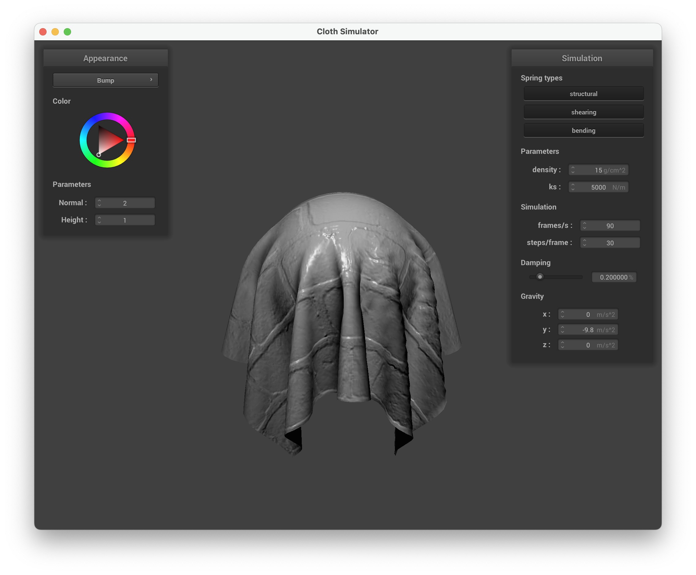
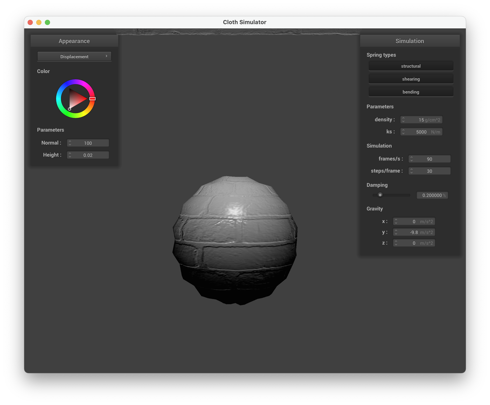

CS 184: Computer Graphics and Imaging, Spring 2024
Project 4: Cloth Simulator
Mengjun Wen, Kingsley Situ
Overview
This project developed a real-time cloth simulation using a mass-spring model. Structural, shearing, and bending springs provided realistic deformation. The simulation incorporated gravity, self-collision detection, collision handling with external objects, and custom cloth shaders for rendering.
Part I: Masses and springs
Take some screenshots of scene/pinned2.json from a viewing angle where you can clearly see the cloth wireframe to show the structure of your point masses and springs.
Show us what the wireframe looks like (1) without any shearing constraints, (2) with only shearing constraints, and (3) with all constraints.
 without any shearing constraints
without any shearing constraints
|
 with only shearing constraints
with only shearing constraints
|
 with all constraints
with all constraints
|
Part II: Simulation via numerical integration
Experiment with some the parameters in the simulation. To do so, pause the simulation at the start with P, modify the values of interest, and then resume by pressing P again. You can also restart the simulation at any time from the cloth's starting position by pressing R.
-
Describe the effects of changing the spring constant ks; how does the cloth behave from start to rest with a very low ks? A high ks?
With a lower ks value, the cloth is more elastic, it makes the cloth appear more fluid and less resistant to stretching, leading to a droopier appearance as it falls. There is a much more visible bounce during and after the fall for a low ks value. The cloth simulated with a high ks value stretches a lot less, and results in a stiffer cloth that resists stretching and bending, making it appear more taut from start to rest.
|
low ks, 5N/m
|
 high ks, 50000N/m
high ks, 50000N/m
|
-
What about for density?
Density is involved in the calculation of the mass of the points in the cloth. With a lower density cloth there isn't much movement when the cloth falls, the curve at the top is much less dramatic than with higher density and results in a lighter cloth that falls slower and may flutter more. With higher density the cloth falls with thicker folds, which means increasing density makes the cloth heavier, causing it to fall faster and potentially stretch more upon impact.
|
low density, 15g/cm^2
|
high density, 1500g/cm^2
|
-
What about for damping?
Damping is the variable that controls how much energy is lost. With a lower dampening value, less energy is lost so the cloth stays in motion more after it falls, swinging back and forth. With a higher dampening value the cloth comes to a stop quickly, reduces oscillations and makes the cloth quickly settle into a stable state.
|
low damping, 0.05%
|
 high damping, 1%
high damping, 1%
|
Show us a screenshot of your shaded cloth from scene/pinned4.json in its final resting state! If you choose to use different parameters than the default ones, please list them.
 scene/pinned4.json(WireFrame)
scene/pinned4.json(WireFrame)
|
 scene/pinned4.json(Normal)
scene/pinned4.json(Normal)
|
Part III: Handling collisions with other objects
Show us screenshots of your shaded cloth from scene/sphere.json in its final resting state on the sphere using the default ks = 5000 as well as with ks = 500 and ks = 50000. Describe the differences in the results.
|
ks=500 N/m
|
ks=5000 N/m(default)
|
The images above demonstrate the effect of varying the spring constant (ks) on the cloth's behavior. With a higher ks value (N/m), the cloth appears looser and less conforming to the sphere's surface. Conversely, lower ks values result in a more form-fitting and draped appearance of the cloth around the sphere. This observation aligns with the understanding that ks influences the stiffness of the cloth material. As the cloth becomes stiffer, it exhibits less flexibility and is less likely to closely follow the contours of the sphere.
Show us a screenshot of your shaded cloth lying peacefully at rest on the plane. If you haven't by now, feel free to express your colorful creativity with the cloth! (You will need to complete the shaders portion first to show custom colors.)
Part IV: Handling self-collisions
Show us at least 3 screenshots that document how your cloth falls and folds on itself, starting with an early, initial self-collision and ending with the cloth at a more restful state (even if it is still slightly bouncy on the ground).
|
just begin falling
|
in the middle
|
|
almost finish
|
final state
|
Vary the density as well as ks and describe with words and screenshots how they affect the behavior of the cloth as it falls on itself.
|
low density, 1 g/cm^2, default ks
|
high density, 1500 g/cm^2, default ks
|
If we change to a high density, we can see that there are more wrinkles and the cloth is more compressed. This is because the cloth is denser and the spring force between point masses is stronger.
|
low ks, 5 N/m, default density
|
high ks, 50000 N/m, default density
|
If we change to a high ks, we can see that the cloth is stiffer, so there are less wrinkles. The cloth tends to fold less and look smoother at the final state compared to a low ks.
Part V: Cloth Sim
Explain in your own words what is a shader program and how vertex and fragment shaders work together to create lighting and material effects.
A shader program is a set of instructions that run on a GPU
to perform rendering in parallel.
They are used to define how vertices and pixels (fragments)
are processed to create visual effects on the screen.
Shader programs are composed of at least two types of shaders:
vertex shaders and fragment shaders.
Together, these shaders allow for the creation of complex
rendering techniques such as lighting, shadowing, reflection,
and more, all running in real-time on the GPU.
Vertex shaders transform the vertex attributes such as position and normal
from their original coordinate spaces into screen space.
This stage also sets up data for next stage(i.e. fragment shader).
Fragment shaders operate on the fragments that result from the rasterization of primitives
to determine the color and other attributes of each pixel.
They work with the interpolated data passed from the vertex shaders.
Explain the Blinn-Phong shading model in your own words. Show a screenshot of your Blinn-Phong shader outputting only the ambient component, a screen shot only outputting the diffuse component, a screen shot only outputting the specular component, and one using the entire Blinn-Phong model.
Blinn-Phong shading is a model to simulate the way light interacts with surfaces.
It provides a simple yet effective approximation of how shinny or matte objects apppears in different light conditions.
It consists of three parts: ambient, diffuse and specular.
The ambient component represents indirect light that is scattered
in the environment and illuminates objects evenly,
regardless of their orientation to light sources.
The diffuse component simulates direct light that is scattered
in all directions upon hitting a rough surface.
The specular component captures the bright spots of light that appear
on shiny surfaces where the viewer's perspective aligns with the reflection
of the light source.
|
phong
|
ambient
|
|
diffuse
|
specular
|
Show a screenshot of your texture mapping shader using your own custom texture by modifying the textures in /textures/.
|
texture
|
texture on the sphere
|
Show a screenshot of bump mapping on the cloth and on the sphere. Show a screenshot of displacement mapping on the sphere. Use the same texture for both renders. You can either provide your own texture or use one of the ones in the textures directory, BUT choose one that's not the default texture_2.png. Compare the two approaches and resulting renders in your own words. Compare how your the two shaders react to the sphere by changing the sphere mesh's coarseness by using -o 16 -a 16 and then -o 128 -a 128.
|
p5-bump-sphere-16 (texture_3)
|
p5-bump-sphere-128 (texture_3)
|
|

p5-bump-cloth-16 (texture_3)
|
p5-bump-cloth-128 (texture_3)
|
|

p5-disp-sphere-16.png (texture_3)
|
p5-disp-sphere-128.png (texture_3)
|
|
p5-disp-cloth-16.png (texture_3)
|
p5-disp-cloth-128.png (texture_3)
|
Show a screenshot of your mirror shader on the cloth and on the sphere.
|
mirror shader on the sphere
|
mirror shader on the cloth
|